비서-3급 (2020-05-10 기출문제)
1과목: 비서실무
1. 상사 출근 전 비서의 업무에 관한 설명이다. 다음 상사의 집무실 그림을 보고 일반적인 비서의 업무 태도로 가장 부적절한 것은?
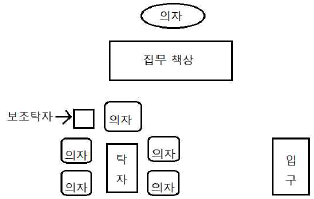
- 신문은 광고나 전단지를 빼고 탁자에 올려놓는다. 신문과 잡지의 배열순서는 상사에게 여쭈어 보고 지시대로 한다.
- 비서가 그 날 해야 할 업무 점검표(예: To Do List)는 비서의 업무수행을 점검받기 위해 집무 책상에 올려둔다.
- 결재판 안의 서류가 떨어지지 않도록 문서를 클립이나 집게로 고정하여 집무 책상에 올려놓는다.
- 상사 일정표의 내용은 비서 업무일지의 스케줄 칸에 기록해두고 상사 일정표는 집무 책상에 올려둔다.
(정답률: 69%)

2. 상사가 서울 본사에서 대전 지사로 1박 2일 출장을 가게 되었다. 해당 지역에 자사의 연수원이 있고, 연수원에 임원진들을 위한 숙소가 있어 예약하였다. 관리실은 연수원 내에 위치하고 있다. 비서의 기본적인 준비 업무 중 가장 부적절한 것은?
- 예약한 객실 번호와 출입 비번을 알려드린다. 혹은 출입키 수령방법을 알려드린다.
- 미리 가서 청소상태를 점검하고 관리실 직원들은 연수원 입구에 영접을 위하여 도열하라고 지시한다.
- 숙소 근처의 음식점 목록과 위치, 전화번호 등을 제공한다.
- 연수원 관리실에 상사의 일정을 미리 통보해둔다.
(정답률: 72%)
3. 조직 구성원들과의 업무 관계에서 비서의 태도로 가장 부적절한 것은?
- 상사와의 업무 관계에서는 상사의 업무 스타일과 가치관, 선호하는 업무 방법을 파악하여 상사에게 가장 알맞은 원칙을 정해두어야 한다.
- 조직 구성원들과의 업무 관계에서는 예를 들어 “보고 내용을 미리 요약하여 사전 보고를 하는 것이 좋다.” 등의 상사 업무 스타일을 직원들에게 알려주는 것이 바람직하다.
- 전화통화를 할 때 밝고 명료한 목소리로 응대해야 하므로 목소리 톤은 솔 이상으로 높이는 것이 바람직하다.
- 외부 고객에게 호의적인 인상을 주기 위해 적절한 어휘선택과 어법에 맞는 문장을 사용한다.
(정답률: 68%)
4. 경영진의 일정 관리 시 기본 원칙에 대한 설명 중 가장 부적절한 것은?
- 확정된 일정일지라도 수행하기 전에 상사에게 재확인한다.
- 비서에게 일정 관리의 전권을 위임한 경우라도, 최종 일정은 반드시 상사에게 보고하고 승인을 받는다.
- 비서는 경영진의 개인 일정에는 관여하지 않는다.
- 상사와 비서의 일정 관리 프로그램을 연동시켜 일정을 공유할 수 있다.
(정답률: 71%)
5. 비서의 응대 업무 태도 중 가장 바람직한 것은?
- 통화 중일 경우 내방객이 들어오면 이때는 일어나지 않아도 무방하다.
- 전화 건 사람이 상사의 지인일 경우에는 용건을 묻지 않고 바로 상사에게 연결한다.
- 선약이 되어 있는 내방객이 방문하면 용건을 파악하여 상사에게 보고 후 손님을 안내한다.
- 중요한 손님의 경우 차종과 차량 번호를 확인해 입구에서부터 의전을 준비한다.
(정답률: 66%)
6. 비서의 내방객 응대에 관한 원칙이다. 다음 중 가장 적절하지 않은 것은?
- 단체 내방객이 방문할 경우에는 음료 및 다과를 준비할 때 동료에게 도움을 청해 신속히 처리하여 면담 분위기가 산만해지지 않도록 하여야 한다.
- 상사가 내방객과 면담 중 차를 낼 경우 의례적으로 노크를 한 후 대답을 기다리지 않고 입실해도 무방하다.
- 음료를 접대할 때 쟁반은 보조 탁자 위에 놓는다. 보조 탁자가 없으면 내방객의 하급자 좌측 끝에 놓는다.
- 면담 시간이 길어지면 한 시간에 한 번씩 새로운 음료를 내간다.
(정답률: 65%)
7. 다음 중 신입비서의 자기개발 방법으로 가장 적절한 것은?
- 회사 조직도를 보고 구성원 이름, 전화번호, 얼굴을 기억하여 업무에 활용하도록 한다.
- 비서의 건강관리를 위해 점심시간을 활용하여 근처 헬스장이나 요가기관에 등록한다.
- 경영자인 상사의 취향, 선호도 파악을 하고 나아가 경영지도사 자격증 취득을 위해 인터넷 강의를 듣는다.
- 비서는 멀티태스킹이 중요하므로 기억력을 높이기 위한 마인드 맵 지도자 과정을 공부한다.
(정답률: 62%)
8. 다음은 비서의 업무와 필요 역량을 연결한 설명이다. 아래의 보기 중 가장 적절하지 않은 것은?
- 신문, 인터넷, 잡지 등을 통해 다양한 정보를 검색, 가공, 정리, 보관하는 정보관련 업무수행을 위해서 정보를 수집하고 분석할 수 있는 역량이 요구된다.
- 여러 매체를 통해 수집한 많은 정보와 지식을 재가공하여 가치 있는 자료로 창조하기 위하여 통합적 사고 역량이 요구된다.
- 상사와 조직 내·외부 사람들, 팀 내 구성원들의 특성과 관계 등을 파악하기 위해 조직이해 역량이 요구된다.
- 인공지능을 포함한 IT 기술이 발달하고 있어 대면 의사소통 역량보다는 IT 관련 역량이 보다 더 요구된다.
(정답률: 75%)
9. 상사를 대신하여 비서가 조문을 갈 때 가장 적절한 태도는?
- 조의금을 전달하고 조객록에는 조문을 온 비서의 이름을 적는다.
- 상주에게 고인의 사망 원인이나 경위 등을 상세히 물어 회사복귀 후 상사에게 보고한다.
- 조의금 전달 봉투 표면에는 賻儀와 상사의 이름을 적는다.
- 영좌 앞에서 절을 할 때는 한 번 절을 하고 상주와 반절을 한다.
(정답률: 68%)
10. 상사로부터 지시를 받아 업무를 처리할 때 비서의 태도로 가장 적절한 것은?
- 상사의 지시 내용 중 이해가 어려운 부분이 있으면 지시 중간에 바로 질문하여 정확한 지시를 받았다.
- 상사의 지시사항을 이행하는 중 상황이 변경되었을 때는 전문비서로서 스스로 판단하여 진행한 후 상사에게 최종보고하였다.
- 직속 상사 외 사내 다른 상사나 고객으로부터 지시를 받는 경우 반드시 직속 상사에게 보고하였다.
- 상사의 지시내용을 전달할 때는 어떤 상황에서도 항상 공식문서로 작성하여 전달하였다.
(정답률: 52%)
11. 상사의 해외 출장 중 비서의 업무 태도로 가장 적절하지 않은 것은?
- 상사가 출장지에서 지시한 업무를 수행하면서 상사 업무 대행자를 적극 보좌한다.
- 불가피하게 자리를 비우는 경우 다른 직원에게 부탁해 급한 연락을 놓치지 않도록 한다.
- 평소에 밀렸던 서류정리나 컴퓨터 파일 정리 등을 한다.
- 상사 부재중 방문한 내방객이나 걸려온 전화는 출장지의 상사에게 실시간으로 보고한다.
(정답률: 60%)
12. 비서의 상사 일정관리와 관련하여 아래의 내용 중 가장 적절한 것은?
- 전통적인 수기 다이어리를 활용할 때는 보안 유지를 위해 사용 직후 파쇄기를 활용하여 폐기한다.
- 스마트 기기의 일정관리 앱으로 상사와 일정을 공유하는 경우 앱에서 알람 설정이 가능하므로 비서가 상사에게 따로 일정을 상기시킬 필요는 없다.
- 상사의 일정을 운전기사와 공유할 때는 가능한 상세히 만나는 사람, 인원 수, 이유 등의 구체적인 내용을 공유해야 한다.
- 일일 일정보고는 전날 상사의 퇴근 전이나 당일 아침에 보고한다.
(정답률: 59%)
13. 조직 구성원과의 인간관계에서 비서의 태도로 가장 적절한 것은?
- 상사의 운전기사가 불친절 할 경우, 상사를 대신하여 단호하게 주의를 준다.
- 업무가 서툰 신입비서로 인해 일이 계속 지연되면 대신 일을 처리하고 업무 범위를 재조정한다.
- 상사가 계속해서 새로운 업무 지시를 할 경우 업무의 우선순위를 상사에게 확인한 후 업무를 처리한다.
- 자신의 능력이나 역량보다 높은 수준의 업무가 주어지면 바로 경험이 많은 선임 비서에게 도움을 요청한다.
(정답률: 66%)
14. 정도물산 한영호 사장의 비서인 이지은 비서가 전화를 받으며 한 행동으로 가장 적절한 것은?
- 사내 전화를 받으며 “안녕하십니까, 정도물산 비서실입니다.”라고 말했다.
- 부재중인 상사에 대해 묻는 고객에게 “사장님께서는 신성호텔 3층 연회장에서 열리는 신제품 개발 회의에 참석 중이십니다.”라고 친절하게 답했다.
- 용건 메모 중 잘 알아들을 수 없을 때는 다시 물어보고 그래도 잘 모르겠으면 상대에 대한 예의가 아니므로 더 이상 묻지 않았다.
- 회장님이 전화하여 상사를 바꿔달라고 하자 용건을 묻지 않고 바로 상사에게 연결하였다.
(정답률: 53%)
15. 다음은 상도물산 김영수 사장의 비서인 이보영 비서의 전화응대 내용이다. 아래의 빈 칸에 들어갈 표현으로 가장 적절한 것은?
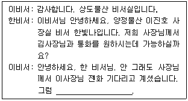
- 먼저 연결 부탁드립니다.
- 제가 먼저 연결하겠습니다.
- 같이 연결할까요?
- 위의 세 가지 표현 모두 가능하다.
(정답률: 63%)
16. 신입비서가 인적 네트워크를 형성하기 위한 노력으로 가장 적절하지 않은 것은?
- 상사가 자주 이용하는 식당에 예약 전화를 걸며 예약 담당자에게 자신을 소개하고 앞으로 잘 부탁한다고 하였다.
- 업무와 관련된 외부 주최 세미나에 참석하여 부족한 업무관련 지식을 학습하였다.
- 비서를 대상으로 하는 커뮤니티에 가입하여 여러 기업의 비서들과 활발히 교류하며 회사와 상사에 대한 정보를 교류하였다.
- 취미 활동으로 퇴근 후 다도 클래스를 수강하며 네트워킹 시 좋은 이미지를 주도록 노력하였다.
(정답률: 66%)
17. 경조봉투에 사용하는 한자 표기가 잘못된 것은?
- 조의 (弔儀)
- 부의 (賻儀)
- 화혼 (華婚)
- 결혼 (結婚)
(정답률: 40%)
18. 다음 화법 중 가장 적절한 것은?
- “사장님의 말씀이 계신 후에 바로 식사를 하시겠습니다.”
- “다음은 원장님의 축사가 있으시겠습니다.”
- “안녕하십니까? 무슨 일로 오셨는지 물어봐도 되겠습니까?
- “고객님, 제가 안내해 드리겠습니다.”
(정답률: 69%)
19. 강사 초청을 하는 세미나 회의를 준비하는 비서의 업무 중 가장 적절하지 않은 것은?
- 세미나 참석자에게 회의 통지문을 발송하여 적어도 개최일 10일 전에 도착할 수 있게 한다.
- 강사에게 참석자 수와 연령대를 미리 알려준다.
- 강사를 소개할 때 필요한 약력은 사회자에게 세미나 전에 전달해 둔다.
- 경비정산을 통해 강사료 가지급금을 미리 받아둔다.
(정답률: 71%)
20. 비서의 예약업무 관련 태도로 가장 올바른 것은?
- 공연 티켓을 예약할 시에는 무대가 가장 잘 보이는 중앙의 앞줄로 예약한다.
- 늘 가던 식당만 가는 상사를 위해 평이 좋은 새로운 식당을 검색하여 예약했다.
- 출장지 숙박 예약 시 인터넷에 올라온 사진과 후기를 참고하여 결정했다.
- 기차 교통편 예약 시 상사가 선호하는 좌석으로 예약했다.
(정답률: 78%)
2과목: 사무영어
21. 다음 일정표의 내용과 일치하지 않는 것은?
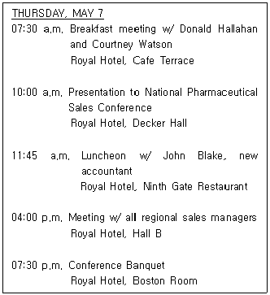
- 오전 7시 30분에 로얄호텔 카페에서 조찬 일정이 있다.
- 오전 10시에 국내 제약 판매 회의에서 프레젠테이션 일정이 있다.
- 오후 4시에 모든 지역 판매 관리자들과 회의 일정이 있다.
- 저녁 7시 30분에 회의 참석자들과 면담이 예정되어 있다.
(정답률: 51%)
22. 다음 중 전화번호를 바르게 읽은 것은?
- 82-32-553-2⑤0: national code eight-two, area code three-two, telephone number double five-three, two-zero-ou-zero
- 738-2000: phone number seven-three-eight, twelve hundred
- 81-3-545-1218: country code eight one, area code three, phone number five-four-five, one-two-one-eight
- 212-355-2987: area code two-one-two, phone number three-double ou, two-nine-eight-seven
(정답률: 53%)
23. 다음 단어에 대한 설명으로 바르지 않은 것은?
- extra charge: 초과 요금
- baggage claim: 수화물 부치는 곳
- boarding pass: 비행기 탑승권
- seating preference: 비행기 등에서 선호하는 좌석
(정답률: 57%)
24. 다음 대화 내용과 맞지 않는 것은?
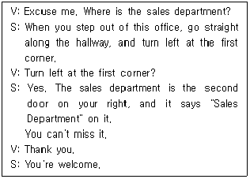
- 방문객이 찾는 부서는 영업부서이다.
- 영업부서 입구에는 'Sales Department'라는 푯말이 있다.
- 영업부서를 가려면 복도를 따라가다가 첫 번째 모퉁이에서 왼쪽으로 돌아가야 한다.
- 영업부서는 2층에 있다.
(정답률: 60%)
25. 다음 영문 편지의 구성요소의 명칭이 바르지 않은 것은?
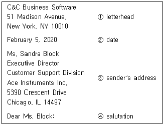
- letterhead
- date
- sender's address
- salutation
(정답률: 45%)
26. 다음 문장 중 문법이 바르지 않은 것은?
- Please find the attached Mr. Lee's travel itinerary.
- Thank you for return the agreement so promptly.
- Staff meeting will be held on Friday, October 14, at the main conference room.
- I'm emailing you a copy of our bid for the SOC Project.
(정답률: 42%)
27. 다음 단어에 대한 설명으로 바르지 않은 것은?
- due date: 만기일
- customs clearance: 통관
- date of issue: 발행일자
- deposit: 송금
(정답률: 50%)
28. 다음 해외호텔 요금제도에 관한 설명 중 틀리게 짝지어진 것은?
- American plan - 객실료에 식대를 포함하여 계산하는 방법
- Continental plan - 객실료에 1식(아침식사)만 포함시키는 방법
- European plan - 객실료에 저녁식대를 포함시키는 방법
- Dual plan - 고객의 요구에 따라 미국식이나 유럽식을 선택할 수 있는 방법
(정답률: 49%)
29. 다음 중 바른 표현만으로 묶인 것은?
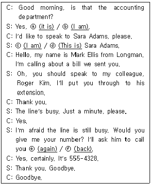
- ⓑ, ⓒ, ⓔ
- ⓐ, ⓓ, ⓕ
- ⓐ, ⓒ, ⓕ
- ⓑ, ⓓ, ⓔ
(정답률: 52%)
30. 다음 대화문에서 밑줄에 가장 적절한 것은?
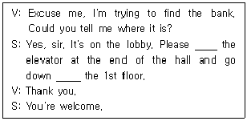
- take – to
- go to – at
- stop – from
- leave – by
(정답률: 50%)
31. 다음 전화 통화에서 밑줄에 가장 적절한 문장은?
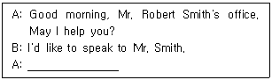
- May I ask calling who's, please?
- May I ask who's calling, please?
- Who may I ask calling, please?
- May I ask who calling is, please?
(정답률: 43%)
32. 다음 전화 내용을 영어로 표현한 것 중 가장 부적절한 것은?
- 전화를 끊으세요. → Please hang up.
- 통화중입니다. → The lines are crossed.
- 전화 받으세요. → Answer the phone, please.
- 이 전화기는 고장입니다. → This phone doesn't work.
(정답률: 46%)
33. 다음 중 가장 적절치 않은 영어 표현은?
- 승진 축하합니다. → Congratulations on your promotion!
- 제 사과를 받아주십시오. → Please accept my apology.
- 성원해 주셔서 정말 감사드립니다. → I feel blessing to have you support.
- 당신을 파티에 초대합니다. → You are invited to a party.
(정답률: 52%)
34. 다음 밑줄 친 우리말을 영어로 옮길 때 괄호 안에 가장 적합한 것은?
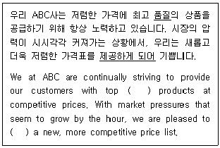
- quality - ask
- quantity - request
- quality - provide
- quantity – require
(정답률: 59%)
35. 다음의 대화 내용과 가장 일치하지 않는 것은?
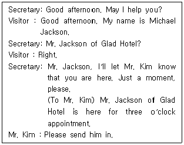
- 방문객은 사전에 약속을 하고 왔다.
- 상사는 지금 방문객을 만날 수 없는 상황이다.
- 방문객은 호텔에서 근무하고 있다.
- 비서는 방문객의 내방을 예상하고 있었다.
(정답률: 54%)
36. 다음 중 용어와 그 뜻이 틀리게 짝지어진 것은?
- 비품 보관함 - supply cabinet
- 발송서류함 - out-tray
- 고무도장 - rubber stamp
- 수정액 - correct white
(정답률: 56%)
37. 다음 보기 중 단어의 뜻이 가장 틀리게 연결된 것은?
- savings: 저축
- registration: 예약
- attraction: 명소
- work: 직장
(정답률: 44%)
38. 다음 빈칸에 들어갈 적절한 동사의 형태는?
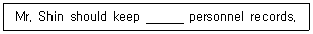
- to update
- updated
- update
- updating
(정답률: 50%)
39. 다음 보기 중 의미가 다른 것은?
- Headquarters
- Main Office
- Branch Office
- Head Office
(정답률: 57%)
40. 다음 대화에 관한 설명 중 가장 바르지 않은 것은?
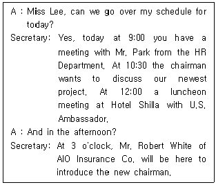
- 10시 30분에는 회장님이 우리의 최근 계획에 대해 토론하기를 원한다.
- 12시에는 미국 대사와 신라호텔에서 오찬이 있다.
- 9시에 인사부 Mr. Park과 회의가 있다.
- 오후 3시에는 보험회사의 새로운 회장님인 로버트 화이트씨를 소개할 것이다.
(정답률: 43%)
3과목: 사무정보관리
41. 다음 중 데이터 분석을 위한 소프트웨어로 가장 적합하지 않은 것은?
- 한셀
- SPSS
- Prezi
- MS-ACCESS
(정답률: 53%)
42. 다음은 비서의 정보 보안 실천 원칙과 관련한 내용이다. 가장 적절하지 않은 것은?
- 비서는 상사가 선호하는 정보 보안방식으로 보안 업무를 한다.
- 상사의 서류나 우편물 개봉과 관련하여 사전에 비서의 업무의 범위를 명확히 규정한다.
- 정보보안 업무는 보안 담당부서에서 수행할 업무이므로 비서의 주요 업무에 들어가지 않는다.
- 비서는 조직과 상사의 비밀 정보에 대한 외부 요청이 있을 경우, 즉시 상사에게 보고한 후 상사의 지시에 따라야 한다.
(정답률: 58%)
43. 다음 중 사무정보기기에 대한 설명이 가장 잘못된 것은?
- 데스크톱 PC: 하드디스크 용량이 크고 컴퓨터 자체 내의 성능이 좋으나 분실 및 파손의 위험이 크다.
- 노트북: 휴대가 편리하며 정해진 공간이 아니더라도 문서를 쉽게 작성할 수 있다.
- 팩시밀리: 간단한 사용법으로 문서의 수신 및 발신을 할 수 있지만 중요한 문서의 경우 수신을 확인할 필요가 있다.
- 화상회의시스템: 비용 절감에 효과적이지만 각 나라별 시차를 주의해 회의를 진행해야 한다.
(정답률: 54%)
44. 다음은 데이터의 종류에 대한 설명이다. 다음 설명을 읽고 보기에서 다른 데이터와 종류가 다른 데이터를 선택하시오.
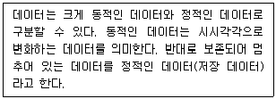
- TV 뉴스에서 제공되는 선거 개표 실시간 현황 데이터
- 책에서 제공되는 데이터
- CD-ROM에 수록된 영상 데이터
- 잡지에 수록된 데이터
(정답률: 63%)
45. 다음 중 비서들의 홈페이지와 블로그 관리에 대한 내용으로 가장 적절하지 않은 것은?
- 최비서는 홈페이지와 블로그를 상시 체크할 수 있도록 준비했다.
- 송비서는 회사가 운영하는 홈페이지와 블로그를 주기적으로 모니터링했다.
- 김비서는 경쟁사 홈페이지와 블로그도 정기적으로 모니터링 한다.
- 파워 블로거를 상업적으로 이용할 수 없기에 차비서는 제품의 홍보에 파워 블로그를 활용하지 않았다.
(정답률: 69%)
46. 다음 메모의 내용 중 맞춤법이 올바르게 작성된 것은?
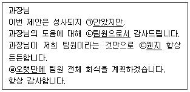
- ㉠
- ㉡
- ㉢
- ㉣
(정답률: 68%)
47. 다음 중 비서의 문서 작성 원칙으로 가장 적절하지 않은 것은?
- 비서는 상사를 대신하여 작성하는 문서인지, 비서의 이름으로 작성하는 문서인지에 따라 작성 계획을 달리한다.
- 상사를 대신하여 작성하는 문서의 경우, 상사가 이 문서를 작성하려는 목적을 파악하여 작성한다.
- 문서를 작성할 때는 문서의 목적을 분명하게 파악하여, 그 목적을 달성할 수 있도록 작성한다.
- 상사를 대신하여 문서를 작성하는 경우, 읽는 사람보다 상사를 중심으로 작성한다.
(정답률: 63%)
48. 다음 중 문서의 종류에 대한 내용으로 가장 적절하지 않은 것은?
- 문서는 유통 대상에 의해 대내 문서와 대외 문서로 구분할 수 있다.
- 업무 보고서, 출장보고서는 지시 문서에 속한다.
- 안내문, 업무 협조문, 회람문은 연락 문서에 속한다.
- 회의록, 인사 기록 카드는 기록 문서에 속한다.
(정답률: 54%)
49. 다음 소괄호 안에 들어간 문장부호의 이름이 잘못된 것은?
- ( . ): 마침표
- (∼): 물결표
- ( : ): 쌍점
- (─): 빗금
(정답률: 67%)
50. 회의를 운영할 때 사용할 수 있는 사무기기 중 다른 세 가지 기기의 용도와 가장 거리가 먼 한 가지는?
- 빔프로젝터
- 열제본기
- 실물화상기
- 오버헤드프로젝터
(정답률: 65%)
51. 다음 중 컴퓨터 바이러스에 감염되었을 때 일반적인 증상에 해당하지 않는 것은?
- 이상한 에러 메시지나 그림, 또는 소리가 발생한다.
- 디스크나 메모리의 용량이 이유 없이 계속 줄어든다.
- 특정 응용 프로그램 실행 시 정상적으로 실행되지 않는다.
- 컴퓨터 작업진행 속도가 갑자기 빨라진다.
(정답률: 66%)
52. 다음 중 문서의 주된 작성목적이 의사전달이 아닌 것은?
- 견적서
- 회의록
- 감사장
- 안내문
(정답률: 54%)
53. 다음 중 사무 정보 기기 활용상의 분류가 다른 하나는?
- 외장하드
- SD카드
- LAN
- 블루레이
(정답률: 57%)
54. 소셜미디어를 이용할 때 비서가 숙지하고 있어야 할 지침으로 가장 잘못 설명된 것은?
- 외부 사이트에 게시할 때 발언은 개인의 의견이며 회사를 대표하는 의견이 아닐 수 있음을 명시한다.
- 회사 공식 소셜미디어에 허가 없이 고객, 파트너, 공급자의 정보를 공개하지 않는다.
- 회사 공식 소셜미디어에 포스팅한 내용이 호전적이 되지 않도록 하며, 과거에 포스팅한 정보 변경은 신중을 기한다.
- 회사 공식 소셜미디어에는 회사의 재무정보, 사업계획, 예정계획 등을 공개해서는 안 되며 긍정적 소문은 일단 동의한다.
(정답률: 64%)
55. 팀비서인 김미소 비서는 팀의 일정관리를 위해 다양한 일정표를 활용하고 있다. 다음에 해당하는 요소를 모두 충족한 가장 적절한 일정표는?
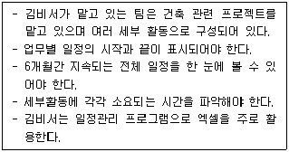
- 장기 일정표
- 월간 일정표
- 간트 차트 일정표
- 꺾은선 차트 일정표
(정답률: 57%)
56. 문서의 결재 및 발송 관련 설명 중 틀린 것은?
- 전결권자는 그 직무를 수행하기 위하여 필요한 권한을 가지나 위임된 전결 사항에 대하여 전결권자가 책임을 지지는 않는다.
- 대결한 문서에 대한 원래 결재권자의 사후 검토는 원칙적으로 시행상의 효력이 없다.
- 직인은 발신명의 표시의 마지막 글자가 인영의 가운데에 오도록 찍는다.
- 조직 내부라고 할지라도 기밀 문서의 경우에는 봉투에 넣어서 봉한 후 직접 전달함을 원칙으로 하며, 수령인이나 인수자의 서명을 받는다.
(정답률: 50%)
57. 공문서 작성 시 주의할 내용으로 가장 바르게 설명된 것은?
- 공문서에 날짜를 표기할 경우 연‧월‧일의 글자를 반드시 삽입해야 한다.
- 공문서는 한글로 작성하며 한자나 외국어는 병기할 수 없다.
- 공문서에는 음성 정보나 영상 정보 등이 수록되거나 연계된 바코드를 표기할 수 없다.
- 공문서에 시각을 표기할 경우 시‧분은 24시간제에 따라 숫자로 표기하고 시‧분 사이는 :으로 구분한다.
(정답률: 55%)
58. 다음 중 공문서에 해당하지 않는 것은?
- 교육부에서 사립대학장에게 발송한 문서
- 사립대학에서 발송한 문서를 교육부에서 접수한 문서
- 대학생이 여름방학 아르바이트를 위해서 구청에 접수한 문서
- 대학생이 취업을 위하여 기업에 제출한 이력서
(정답률: 62%)
59. 다음 중 무선 네트워크 설정을 위한 비서의 행동으로 가장 적절하지 못한 것은?
- 김비서는 윈도우 기반 노트북에서 제어판-네트워크 및 인터넷-네트워크 및 공유센터에 들어가 무선 네트워크 설정을 '사용'으로 바꾸었다.
- 최비서는 무선 네트워크 사용을 위해 무선 공유기를 설치했다.
- 박비서는 회사 내에서 직원 공용으로 사용하는 무선 네트워크에 편의를 위해 비밀번호를 설정하지 않았다.
- 신비서는 네트워크 오류가 발생하자 컴퓨터에 설치된 LAN카드의 정상 작동 여부를 파악했다.
(정답률: 65%)
60. 다음 중 접수한 문서를 상사에게 전달하는 방법으로 가장 적절하지 않은 것은?
- 상사에게 문서를 전달할 때 친전문서나 사신이 아닌 일반문서는 개봉하여 전달한다.
- 긴급 서신, 중요 서신, 개봉하지 않은 서신은 전달할 문서 아랫부분에 놓는다.
- 청구서, 견적서, 송장 등 금액이 적힌 문서는 숫자를 정확히 검토하여 전달한다.
- 상사 부재 시에는 문서나 우편물을 폴더나 큰 봉투 속에 넣어서 책상 위에 놓아두거나, 비서가 보관하고 있다가 상사가 돌아왔을 때 전달한다.
(정답률: 55%)
"비서가 그 날 해야 할 업무 점검표(예: To Do List)는 비서의 업무수행을 점검받기 위해 집무 책상에 올려둔다."는 비서가 자신의 업무를 체계적으로 관리하고 상사에게 업무 수행 상황을 보고하기 위해 필요한 일이다.